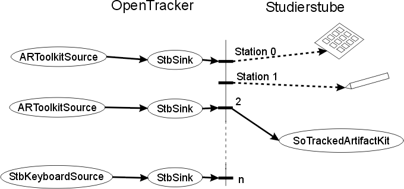

The actual Studierstube workspace presents an application environment similar to a desktop for standard 2D GUI applications. This is the program that is started to display and run any Studierstube application. It provides configuration mechanisms to control input and output and the look of parts of the standard user interface presented to a user. This chapter will provide information on how to run the workspace, the possible configuration options and how to set them.
The workspace is a standalone program in the directory studierstube/bin/workspace. On windows you will find two versions, workspace.exe compiled as release version and workspaced.exe for debugging purposes. This is the main program of Studierstube. If you run it without further options, it will open a default window presenting a default application environment.
To start with a certain application, pass in the path to an Open Inventor file containing an SoApplicationKit node with the command line option -a:
workspace -a simple_stb.iv
It will then load all applications contained in the file simple_stb.iv. Each application is represented by an SoApplicationKit and there can be more than one in the file passed to the workspace. The details of the SoApplicationKit and its parts will be discussed in the next chapter, but just to give a short outlook, the simple_stb.iv file in the provided example looks like the following.
DEF TEST_APP SoApplicationKit {
contextKit SoContextKit {
...
windowGroup Group {
File { name "content/main.iv" }
}
}
}
Besides the applications, there is more to configure when running a workspace. The basic configuration elements include:
All together they are controlled by additional configuration files passed to the workspace program. A number of command line options are available to do that, and a few more to specify other less important options. The details can also be found on the Workspace Commandline Options page. We will only discuss the most important ones here:
| Longname | Shortname | Type | Default | Description |
|---|---|---|---|---|
| --application | -a | string | "" | path of Studierstube applation to load upon Workspace startup. This is an .iv file containing one or more SoApplicationKit and all necessary parts. |
| --tracker | -tr | string | "defaultTracker.xml" | OpenTracker
configuration file, see next section for details on it's contents. |
| --timings | -time | flag | use this flag to activate output of frame rate and other performance measurements on the console. | |
| --userkits | -uk | string | "defaultUserKit.iv" | name of iv-file
containing all users (SoUserKits), which shall enter the
workspace. See the following sections for more details on it's contents. note: UserKits can be added to the iv-file directly or by adding an SoFile-node |
| --workspacedir | -wd | string | "./" |
Directory of Workspace executable and support files. |
The option -tr will set the configuration file for the tracking configuration described in the next section. If not specified, it will use a default file found in the same directory as the workspace.exe. The option -uk will set the configuration file for display and user specific user interface elements. Again, if it is not specified, it will use a default file containing one user and creating one output window with a default viewer.
The option -wd can be used to set the default directory for static geometry used in the workspace. If the STBROOT environment variable is set, it is usually not necessary to specify this option.
The option -time will output some information on the rendering framerate and event handling rate of the running workspace.
The tracking configuration is delegated to a dedicated library called OpenTracker. The User Guide gives a detailed description of how to use and create configurations for OpenTracker. We will only describe how to interface Studierstube with OpenTracker here.
OpenTracker reads data from
various tracking devices, transforms it
and forwards it
over a defined interface to the Studierstube. Studierstube manages
tracking input events in individual channels called stations. These are
numbered from 0 upwards to the maximum station number configured in a
setup. OpenTracker is then configured to pass events from certain
sources into defined stations. The following figure
gives an overview of the relationship between the two components.

Fig. : OpenTracker uses StbSink configuration elements to define which events to pass to which station channels in the Studierstube.
Within the OpenTracker configuration file, the element StbSink is used to describe the mapping. The element has an attribute station and all events passing through it are forwared to the Studierstube runtime and processed for the defined station. A second attribute event defines if the events for this station are processed with the SoHandle3DEventAction and propagated over the scene graph or not. In any case, the events are available over the global fields associated with the station number and can be used in an SoTrakEngine or SoTrackedArtifactKit, for example.
The following snippet of an OpenTracker configuration file shows the use of the StbSink element. The first part forwards the event coming from an StbKeyboardSource (with number 0) to the station 0 without propagating it over the scene graph, the second part uses the events for station 1 and defines to also pass the event over the scene graph.
<StbSink station="0">
<StbKeyboardSource number="0"/>
</StbSink>
<StbSink station="1" event="on">
<StbMouseSource mode="relative"/>
</StbSink>
In addition to all the different device drivers and transformations included in OpenTracker, there are a number of special sources that are available, if it is used together with Studierstube. These sources allow inputs from the mouse or keyboard to be used as tracking input in the OpenTracker configuration. The following two elements are available:
<StbKeyboardSource number="2"/>
<StbMouseSource mode="relative"/>
The StbKeyboardSource takes keyboard events entered into the active Studierstube window and creates tracking events from that. The functionality is described in detail in the StbInputModule that allows to configure the individual key assignments. The StbMouseSource outputs the position of the mouse pointer with the active Studierstube as x and y coordinates in the position part of a tracking event. The attribute mode configures whether the position is given relative in the interval [0,1] or absolute in pixel coordinates.
An additional element SoStbSource provides feedback from an Open Inventor node into the OpenTracker configuration again. It uses values from defined Open Inventor fields to create tracking events. Whenever one of the connected fields changes, it assembles a new tracking event and sends it through the OpenTracker graph. The following snippet gives an example:
<StbSource node="MyNode" position="translation" orientation="rotation" button="state" />
In the example above the fields translation, rotation and state from an Inventor node named MyNode (the node has the DEF name 'MyNode') are observed by the StbSource and their values are used to create tracking events. The following attributes are available to define the mapping:
node
if present this is the name of the OpenInventor node to refer the
fields to. If the node field is empty the field
names must be prefixed by a node name seperated with a '.'(dot). Then
each field come from another node ! position
the field name of a SoSFVec3f field that contains the position. orientation
the field name of a SoSFRotation field that contains the orientation. button
the field name of a SoSFInt32 field that contains button information. confidence
the field name of a SoSFFloat field that
contains confidence information. Besides the general tracking configuration as described above, there are many more parameters available to configure a Studierstube workspace for a given setup and application. The next two parts describe how to configure the display output and the general user interface present in the workspace.
The configuration of displays and user interfaces are related to the concept of a User in Studierstube. Each user of Studierstube has a dedicated display that is supported by an individual window and an associated camera that is used to render into that window. A user is also associated with up to three default tracking channels or stations, one for the head-tracking (if required), one for a default 6DOF input device called pen, and one for a secondary input device usually used for the PIP (Personal Interaction Panel). All of these configurations are set with a dedicated Inventor node SoUserKit and are provided to the workspace in a special configuration file containing only SoUserKit nodes, one for each user present in the setup. The documentation of SoUserKit also provides a commented example configuration.
The following Inventor snippet provides the basic layout of the SoUserKit node and its parameters:
SoUserKit {
userID 0
pen SoPenKit{ ... }
pip SoPipKit { ... }
display SoDisplayKit { ... }
}
The first field userID provides a unique user number, all users configured need to have different numbers. Then there are three parts pen, pip and display which in turn contain dedicated nodes of type SoPenKit, SoPipKit and SoDisplayKit. These are used to configure the details of the primary input device, the PIP and the output display for that user. If they are not present, the corresponding object is not created for that user. For example, if the pen part is not present, no pen will be created and configured for that user; if the display part is not present no render window will be created for that user.
The SoDisplayKit node in the part display configures the parameters for the output render window and the camera of a user. At least for one user it has to be present to have any output in a Studierstube workspace. The configuration fields and parts of the SoDisplayKit fall into two categories, one for the output window itself and one for the virtual camera used to render the output image.
The following fields are relvant for the output window and basic rendering attributes:
| Name | Type | Description |
|---|---|---|
| isRendering | SoSFBool | controls if an output window should be created at all |
| xoffset | SoSFInt32 | x position of the left-top corner of the window on the desktop |
| yoffset | SoSFInt32 | y position of the left-top corner of the window on the desktop |
| width | SoSFInt32 | width of the window |
| height | SoSFInt32 | height of the window |
| headlight | SoSFBool | controls if a headlight should be used or not. This is useful, if there are no lights in the scene |
| headlightIntensity | SoSFFloat | sets the intensity of the headlight |
| transparencyType | SoSFEnum | sets the transparency type to use for rendering. These are the same as defined for the So |
| backgroundColor | SoSFColor | defines the background color of the render window |
| videoBackground | SoSFNode | defines which video background implementation to use. If present a video from a camera or other source is used as a background of the window. See SoVideoBackground for possible types. |
| pixelFormat | SoSFInt32 | if present defines which OpenGL pixelFormat to use for the window. Only useful, if you know what you are doing. |
| showMouse | SoSFBool | controls if the mouse cursor should be visible within the render window |
| windowBorder | SoSFBool | controls if the window should be created with a boarder and title bar to be manipulated by the mouse |
| decoration | SoSFBool | controls if the internal decorations for controlling the viewpoint should be visible |
| windowOnTop | SoSFBool | controls if the window should always stay on top. |
| stencilBuffer | SoSFBool | controls if the OpenGL context used should support stencil buffering. This is required for using the SoStencilBuffer node. |
The following are some examples to give an idea of what some of the options described above do. Not all of them can be demonstrated with a simpe example tough.
SoDisplayKit {
|
SoDisplayKit {
|
| Left typical desktop window | Render window for hmd output |
The remaining fields and parts control the camera used to render the view in the window. These include setting the camera parameters and how it is controlled within the workspace. A camera in an augmented reality application is usually associated with the viewpoint of a real user. Therefore it needs to be able to describe the different rendering parameters necessary to produce the correct view for that viewpoint. There are a number of issues to be aware of:
| Name | Type | Description | |
|---|---|---|---|
| station |
SoSFInt32 |
The tracking station that controls the camera's movement, if an appropriate camera control mode is configured. | |
| stereoCameraKit | SoSFNode | This field contains a SoStereoCameraKit which in turn contains two cameras one for each eye and an optional additional camera for desktop viewing modes. The field can also contain an SoFile node which references a file containing an SoStereoCameraKit. | |
| display | SoDisplayMode part | This part configures the stereo rendering mode for the display. It contains one of the following subclasses of the SoDisplayMode class to describe which technique to use. | |
| SoMonoDisplayMode | configures monoscopic rendering and is the default. | ||
| SoFieldSequentialDisplayMode | configures interleaved images for right and left eye. Usually implemented using OpenGL quad-buffered stereo rendering. |
||
| SoLineSequentialDisplayMode | configures interleaved line rendering for left and right eye. The even scanlines will correspond to one eye and the odd lines to the other eye. Two implementations based on stencil buffering or polgygon stippling are availabe. | ||
| SoAnaglyphDisplayMode | uses different color masks for left and right eye to create images viewable with tainted glasses. | ||
| SoDualChannelDisplayMode | uses different viewports for left and right eye. Usually depends on additional hardware to separate the images for the display device. | ||
| cameraControl | SoCameraControlMode part | This part configures the camera control mode for the display. It contains one of the following subclasses of the SoCameraControlMode class to configure the way the camera is moved. | |
| SoDesktopControlMode | The default mode which uses standard Open Inventor viewer controls for desktop operation. | ||
| SoTrackedDisplayControlMode | A fixed camera that is moved in space. HMDs use this model. Uses the station field to define the tracking channel for the camera. | ||
| SoTrackedViewpointControlMode | A fixed display surface with a moving eyepoint. Projection displays with head tracking use this mode. Also uses the station field to define the tracking channel for the eyepoint | ||
| SoTrackedViewpointMobileDisplayControlMode | A mobile display surface with a moving eyepoint. Used by setups where both the display and the eyepoint are tracked and moving. Uses additional configurations for the two tracking channels required. | ||
| customEnvironment | SoMFNode | ||
The other parts of the SoUserKit allow to configure the specific user interface elements pen and PIP of a single user. See also the Workspace User-Interface Guide for a short overview of the different elements of the standard user interface.
The part pen contains an SoPenKit which is basically just an SoTrackedArtifactKit. Typically it is used to set the tracking station describing the movements of the pen device and the geometry of the pen to render. This is accomplished using the standard fields of the SoTrackedArtifactKit. The following example shows how this can look within an SoUserKit node:
pen SoPenKit{
station 1
geometry File { name "content/pen.iv" }
}
The part pip contains a SoPipKit which describes the parameters of the PIP. It is also derived from the SoTrackedArtifactKit and uses the same basic fields to define tracking station and geometry. It also defines some additional fields to describe the area where application specific PIP sheets are presented and which default menus should be visible. The following fields are supported:
| Name | Type | Description |
|---|---|---|
| pipSize | SoSFVec3f | to total bounding box of the pip geometry |
| sheetAreaUpperLeft | SoSFVec2f | defines the upper left coordinate of the bounding area where PIP sheets are presented |
| sheetAreaLowerRight | SoSFVec2f | defines the lower right coordinate of the bounding area where PIP sheets are presented |
| systemBar | SoSFBool | controls if the system bar of system controls is visible or not |
| windowBar | SoSFBool | controls if the window bar of window controls is visible or not |
| skinFileName | SoSFString | defines the skin file which describes the layout of PIP components in details. See the example for more information. |
| skinDirectory | SoSFString | directory information for the skin file |
A simple example for the definition of a user's PIP may look as follows. It only defines the tracking station to use and the geometry of the PIPs body.
pip SoPipKit {
station 2
geometry Group {
File { name "../content/pip.iv" }
}
}